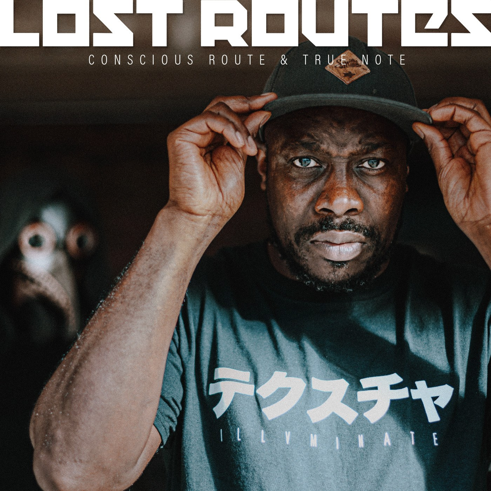
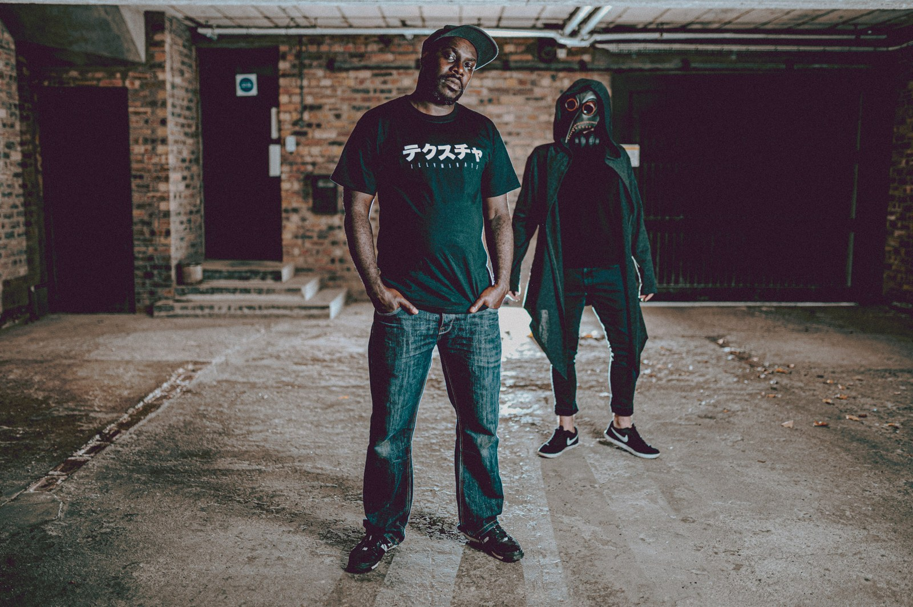
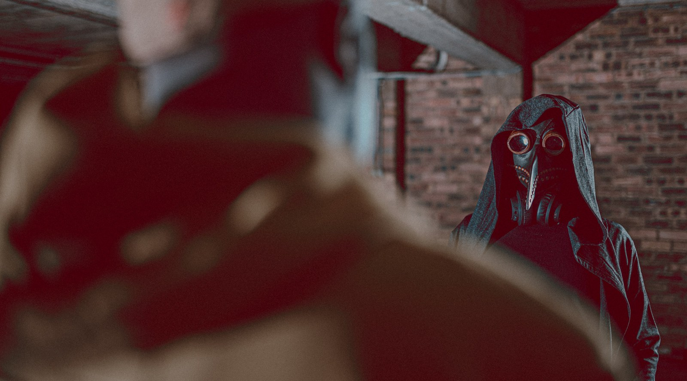
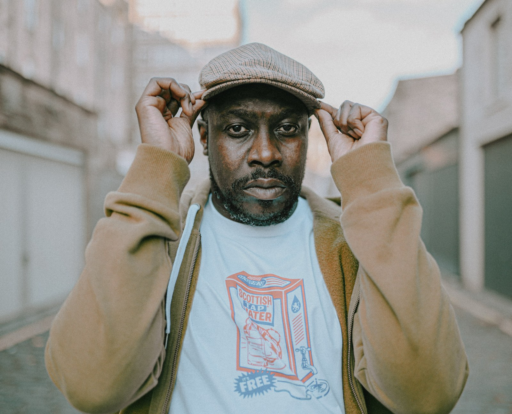
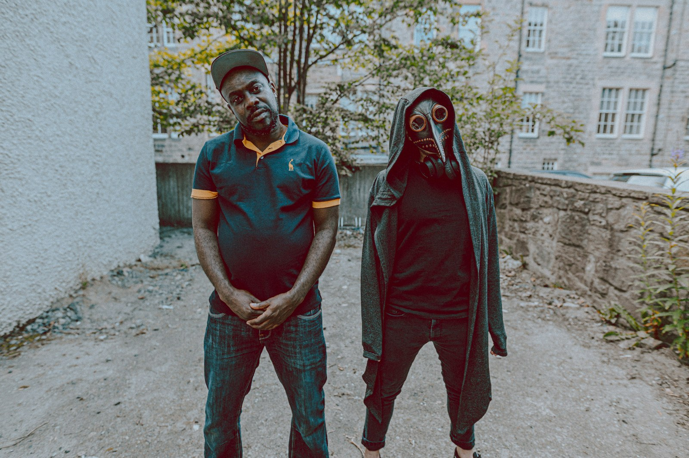

TRUE NOTE
Hip-hop / ProductionEdinburgh, Scotland

01 / Featured release
Lost Routes
Conscious Route × True Note
A collaborative debut album spanning hip-hop, grime, drum and bass and electronica. Conscious Route explores personal struggles, mental health and social commentary against True Note’s production.
On record
Moving images


Behind the beats
True Note is a hip-hop production alias. The collaboration with Conscious Route grew from earlier remixes and EPs made during the Blind Digital years, developing into Lost Routes.
From the archive



